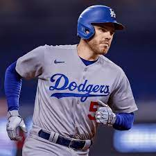

Los Angeles Dodgers
The Dodgers landed where they usually do when the first preseason rankings of the year come out -- No. 1, based on their never-ending depth and success in the prior season. The Dodgers lost key players to free agency, including Corey Seager and Max Scherzer, but Trea Turner moving back to his natural position at shortstop should help solidify the infield situation. The Dodgers could use some starting pitching help, and they partly addressed that by reportedly re-signing one of their own, Clayton Kershaw, to a one-year deal.